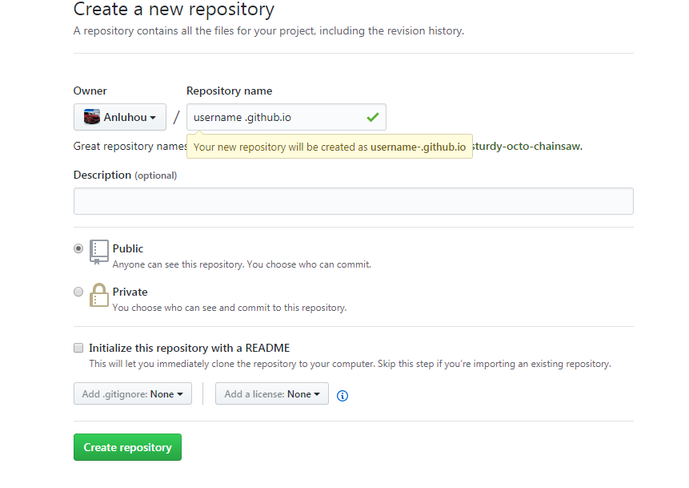
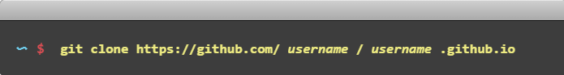
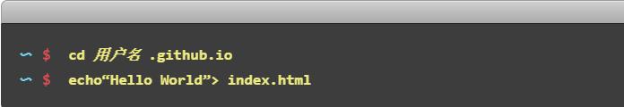
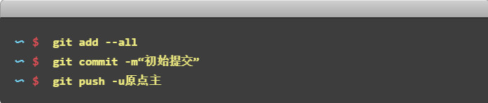
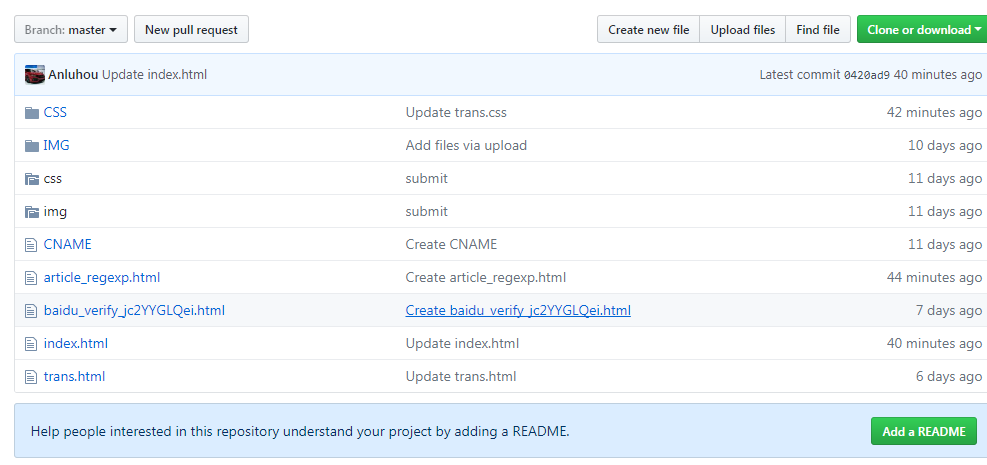
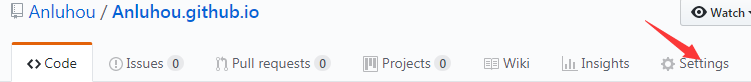
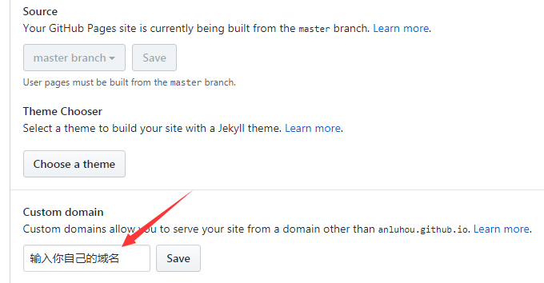
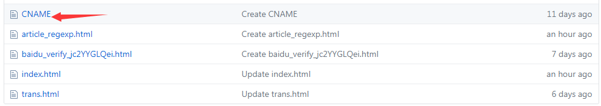

如何利用GitHub Pages 搭建自己的博客
1.创建一个存储库
转GitHub并创建一个名为username .github.io 的新存储库，其中username是GitHub上的用户名（或组织名称）。
如果存储库的第一部分不完全符合您的用户名，则不起作用，因此请确保正确无误。
2. 下载git
3.克隆存储库
转到要存储项目的文件夹，然后克隆新的存储库：
输入项目文件夹并添加一个index.html文件.博客首页必须用index.html来显示
4.上传
添加，提交和推送您的更改：
5.通过其他方式上传代码修改博客
进入自己的username.github.io仓库 可以直接修改代码
6.为您的GitHub Pages网站添加或删除自定义域
在GitHub上，导航到你的GitHub Pages站点的仓库。
在您的存储库名称下，单击 Settings
在“自定义域名”下，添加或删除自定义域名，然后点击保存。
7.将你的域名解析到GitHub Pages博客上
添加CNAME文件:在仓库根目录下添加一个CNAM文件，没有后缀名，里面内容为你的域名(如:test.com),不需要添加http/www等前缀。
